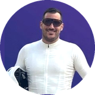

Lo normal: pulsa EMPEZAR en la app del móvil (aunque sea un rato
antes de la salida) y la carrera se pone en marcha aquí sola. Este botón es para
cuando no usas la app.
Con iGPSPORT: en su app, compartir seguimiento en vivo, y pega el enlace aquí.
Salida oficial: —
· el crono cuenta desde ahí (se cambia en Preparar → Datos)
Estado
Estado: —
Crono desde: —Último dato: —
GPS del móvil: —
Si el directo se cortó y la web se quedó atrás, pon la hora a la que
llegaste: la web te pondrá en meta con ese tiempo final. Vacío = la que
detectó el GPS o, si no, ahora.
Sin la app: iPhone, Traccar o reloj
Con la app Android no hace falta nada de esto. Para iPhone (Traccar Client)
o el reloj Amazfit, y para generar un identificador nuevo:
Ver la configuración
Posición directa desde el móvil, más fiable que la de iGPSPORT con mala
cobertura: sin señal guarda los puntos y los manda al volver. Instala
Traccar Client (gratis, Android e iPhone) y pon:
Frecuencia: 10 s · Precisión: alta · Distancia: 0 · y activa el servicio.
En Android, quita el ahorro de batería a Traccar Client. iGPSPORT sigue
dando el pulso y la cadencia.
Reloj Amazfit (miniapp Sígueme CC): en la app Zepp → Sígueme CC → Ajustes,
la misma dirección y el mismo identificador. Manda posición y pulso; si
llevas móvil con Traccar y reloj a la vez, la posición la da uno solo.
Preparar la carrera
Cargando…
Sigue el siguiente paso de arriba, o pulsa cualquier fila para ir a su
sitio. Se prepara en casa, con cobertura. Con una carrera en marcha no se pueden cambiar la ruta ni los datos.
Datos de la carrera

Sale en el mapa y en la ficha. Se recorta cuadrada.
Más datos (bici, privacidad, archivo)
Ruta (GPX)
El GPX de la organización, o el que exportas de Strava, Komoot o Wikiloc. Salen
el trazado del mapa y el perfil, y se rehace el plan de avisos.
—
Avituallamientos
Nombre y km de cada uno (la meta también, si quieres que salga en el mapa).
Avisos a la pulsera
Salen solos del perfil: antes de cada subida (tipo, largo, %, D+, rampa), a mitad
de las largas, en la cima, antes de cada avituallamiento, un resumen cada pocos km y el último km.
La app del móvil los baja y los lanza sin cobertura; Zepp o Mi Fitness los pasan a la pulsera.
—
Ver y cambiar los textos
Texto vacío = ese aviso se quita. «{dist}» se cambia por lo que falta al avituallamiento.
Rehacer el plan (o cambiar la ruta o los avituallamientos) vuelve a los textos automáticos.
App del móvil (Android)
Una sola vez, en casa: escanea este código con la cámara del móvil. Se abre la página
de la app: instálala (la primera vez), vuelve a esa misma página y pulsa «Abrir en la app».
Después ya no hace falta escanear nada: el día de la carrera pulsa EMPEZAR en la app
(aunque sea un rato antes de la salida) y baja el plan al día y pone la carrera en marcha aquí.
Solo si generas un identificador nuevo hay que volver a escanear.
La app aún no ha bajado el plan
Resultado de la carrera
Después de meta, sube el fichero FIT de tu reloj o ciclocomputador (en Garmin
Connect, Strava o la app del reloj: exportar o descargar el original). La web pasa a modo
resultado: tiempo oficial, paso por cada avituallamiento y la repetición de la carrera.
Archivar
Archivar la carrera terminada: pasa a su propia
dirección (por ejemplo /2027-mi-carrera/) y sale en «Todas las carreras».
Necesita el resultado (arriba) y deja todo a cero para la siguiente.
Pruebas (borran la carrera en curso)
Recorre la ruta en 2 minutos con datos falsos, o deja todo a cero antes de una carrera nueva.